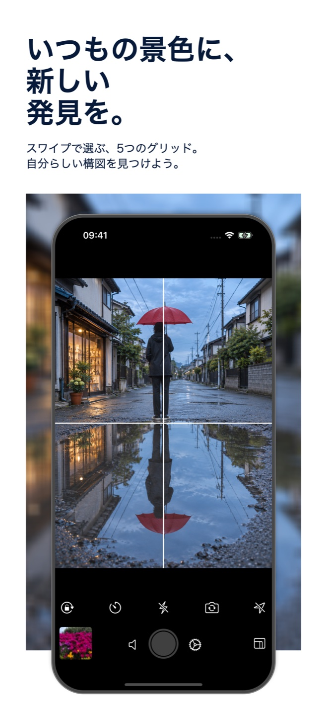
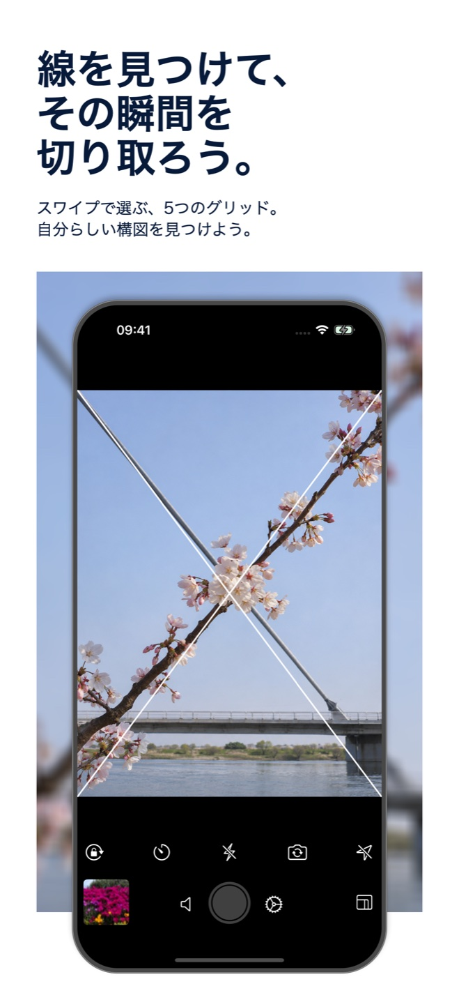

スワイプで構図を切り替えるSwipe to change the composition
通常・スクエアそれぞれ5種類のグリッドを選べます。スクエアグリッドでは、写真も正方形で保存されます。Choose from five regular and five square grids. Photos taken with a square grid are saved in a square format.
Gcamera
写真・構図Photography & composition
スワイプでグリッドを切り替えながら、写真の構図を考える。撮る前のひと工夫を助けるカメラです。Swipe between composition grids and frame your photo before you take it.
通常・スクエアそれぞれ5種類のグリッドを選べます。スクエアグリッドでは、写真も正方形で保存されます。Choose from five regular and five square grids. Photos taken with a square grid are saved in a square format.
グリッドを写真に重ねて保存できます。撮影時に考えた構図を、写真と一緒に残せます。Save a photo with its composition grid included.
写真画面からInstagramを開いて共有できます。ほかのアプリやメールへの共有にも対応しています。Instagram連携には、Instagramアプリのインストールが必要です。Open Instagram from the photo viewer to share your shot. You can also share to other apps or send by email. The Instagram app must be installed to use the Instagram shortcut.
十字・対角線・三分割。グリッドを変えて、いつもの景色を違う構図で。Cross, diagonal, and rule-of-thirds grids. Find a different composition in familiar scenes.


画面内の写真は紹介用のイメージです。Photos shown in the app screens are illustrative.